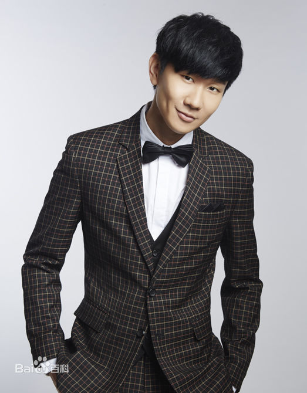

The CD of walking
JJ 林俊杰

林俊杰（JJ Lin），1981年3月27日出生于新加坡，华语流行乐坛男歌手、词曲创作者、音乐 制作人。
2003年发行首张创作专辑《乐行者》[1] 。2004年凭专辑《第二天堂》中的《江南》一曲成名[2] 。2014年以专辑《因你而在》夺得第25届台湾金曲奖最佳国语男歌手 奖[3] 。2016年以专辑《和自己对话》再度获得第27届台湾金曲奖最佳国语男歌手奖[5] ， 并推出个人首部音乐纪录片《听·见林俊杰》[6] 。截止到2016年，已发行12张正式专辑， 累计创作数百首歌曲。
1981年3月27日，林俊杰出生于新加坡的一个音乐世家。在父母的引导下，4岁就开始学习古典钢琴，不善言辞的他由此发现了另一种与人沟通的语言。小时候的林俊杰把哥哥当作偶像，跟随哥哥的步伐做任何事，直到接触流行音乐后，便爱上创作这一条路。
1996年，林俊杰开始参加各种歌唱比赛，前后获得多个词曲创作和演唱大奖。1999年，海蝶音乐在“非常歌手训练班”发现了他。这个腼腆害羞、并不起眼的高中生，却在自弹自唱的时候，展现了对音乐的纯真热忱。当时在学校成绩优秀的林俊杰，在已收到新加坡国立大学入学通知的情况下，放弃升学，与海蝶签下一纸合约，从此开启了他的音乐道路。
新加坡男性均须服兵役，林俊杰亦不例外。由于专长，他加入的是新加坡武装部队文工团。
有时候，喜欢上一个人，不过是一瞬间的事
第一次听见他的声音，是在初中的时候，《醉赤壁》，一个不怎么听音乐的人，却被这具有穿透力的声音震撼了。我在想，世界上怎么会有这么好听的声音，可以让一个人沉醉。 第一次唱哭一首歌，就是他的《记得》，那时刚失恋的我，在KTV哭的唱不出一句歌词，他的歌实在是感染力太强。他翻唱的《我怀念的》，以前也听过，可只有他唱的才让我觉得喜欢，然后单曲循环。这个大男孩是新加坡人，笑起来有两个小酒窝，说不上很帅，却很阳光，很温暖。我想，他的声音很特别，至少对我来说很特别，听着会心痛。 遇见有喜欢他的人，会觉得找到了知己，会很兴奋的交流关于jj的一切，虽然微不足道，可是很开心，真正开心的那种开心，很干净的那种开心。可能他就是那个，远在天边，却是在我内心深处的人，因为他的声音可以毫无保留的穿透我的灵魂。---行走的CD
